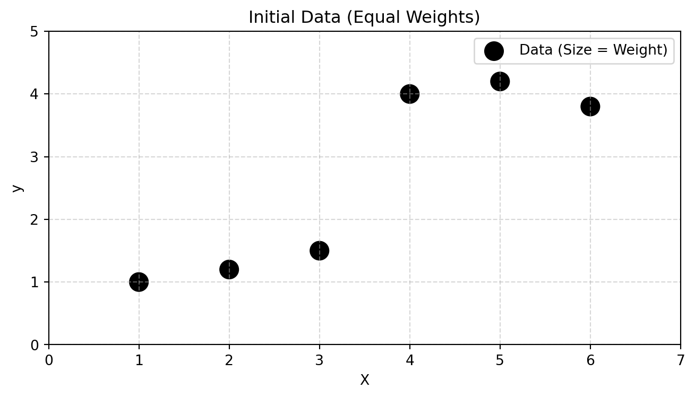
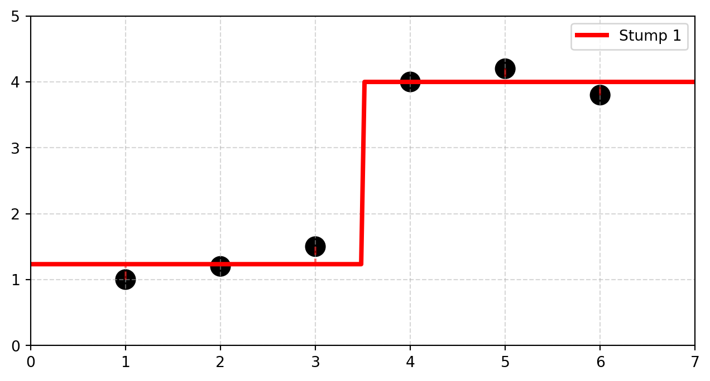
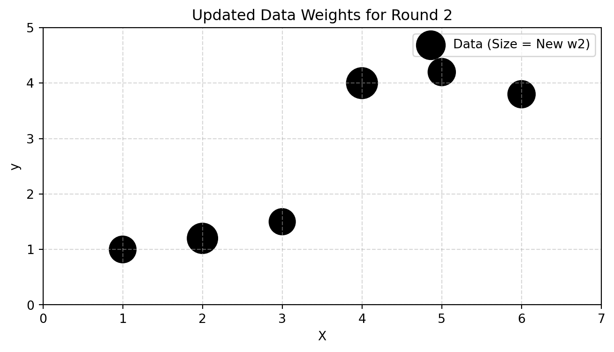
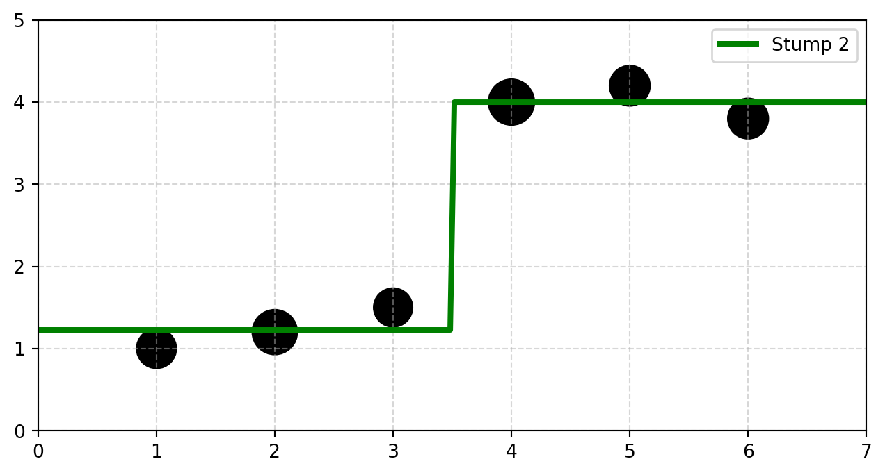
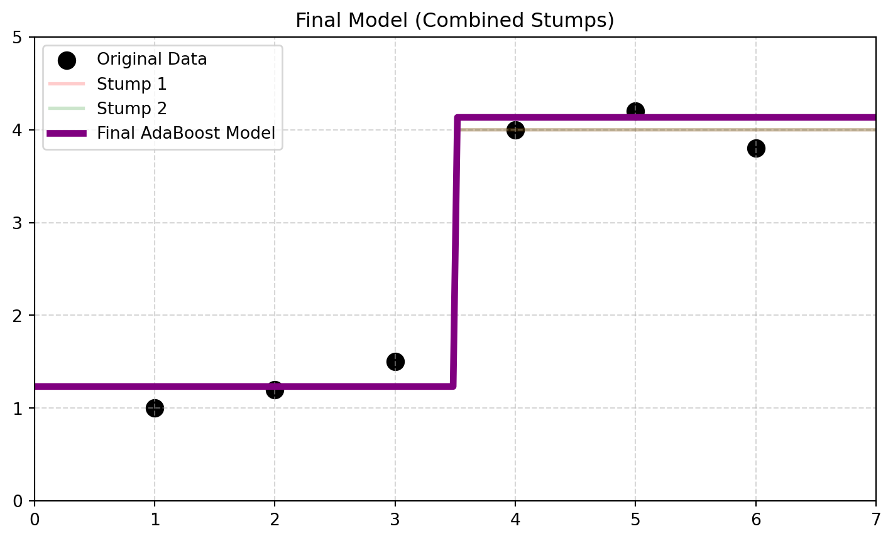

A Step-by-Step Visual & Mathematical Guide
AdaBoost.R2 extends the classic AdaBoost classification algorithm to continuous regression problems.
In round \(t\), we train a stump and calculate its error on the dataset to determine its weight \(W_t\).
Step A: Relative Loss (\(L_{t,i}\)) For each data point \(i\), we scale the absolute error against the maximum absolute error \(D_t\) made by the stump: \[ D_t = \max_{i} |y_i - \hat{y}_{t,i}| \quad \Rightarrow \quad L_{t,i} = \frac{|y_i - \hat{y}_{t,i}|}{D_t} \]
Step B: Average Loss (\(\bar{L}_t\)) Sum the relative losses, weighted by the current data point weights \(w_{t,i}\): \[ \bar{L}_t = \sum_{i=1}^N w_{t,i} L_{t,i} \]
Step C: Stump Confidence (\(\beta_t\)) & Weight (\(W_t\)) Calculate the confidence factor \(\beta_t\). A lower error yields a lower \(\beta_t\). \[ \beta_t = \frac{\bar{L}_t}{1 - \bar{L}_t} \]
The final weight given to this stump’s prediction in the ensemble is: \[ W_t = \ln\left(\frac{1}{\beta_t}\right) \] (If \(\bar{L}_t \ge 0.5\), the algorithm stops early because the stump is worse than guessing).
After round \(t\), we update the weight of each data point so the next stump focuses on the largest errors.
\[ w_{t+1,i} = \frac{w_{t,i} \cdot \beta_t^{(1 - L_{t,i})}}{Z_t} \]
Once all \(T\) stumps are trained, how do we make a new prediction for an input \(X\)?
\[ \hat{y}_{final}(X) = \inf \left\{ y \in Y : \sum_{t:\hat{y}_t(X) \le y} W_t \ge \frac{1}{2} \sum_{t=1}^T W_t \right\} \]
This median approach makes the ensemble highly robust to outlier predictions.
Let’s use a small 6-point dataset. Initially, all points have equal weight (\(w_{1,i} = 1/6 \approx 0.167\)).

Stump 1 minimizes error across all equally weighted points.

| X | y | Init w | Pred | Abs Err | Rel Loss (L) |
|---|---|---|---|---|---|
| 1 | 1 | 0.167 | 1.23 | 0.23 | 0.875 |
| 2 | 1.2 | 0.167 | 1.23 | 0.03 | 0.125 |
| 3 | 1.5 | 0.167 | 1.23 | 0.27 | 1 |
| 4 | 4 | 0.167 | 4 | 0 | 0 |
| 5 | 4.2 | 0.167 | 4 | 0.2 | 0.75 |
| 6 | 3.8 | 0.167 | 4 | 0.2 | 0.75 |
Points with higher relative loss keep their weight; points with low loss are penalized by \(\beta_1\). We then normalize (\(Z_1\)).
| X | Rel Loss (L) | Power (1-L) | Factor (β^(1-L)) | New w (w2) |
|---|---|---|---|---|
| 1 | 0.875 | 0.125 | 1.043 | 0.15 |
| 2 | 0.125 | 0.875 | 1.342 | 0.193 |
| 3 | 1 | 0 | 1 | 0.144 |
| 4 | 0 | 1 | 1.4 | 0.201 |
| 5 | 0.75 | 0.25 | 1.088 | 0.156 |
| 6 | 0.75 | 0.25 | 1.088 | 0.156 |
Notice how points 4, 5, and 6 (which Stump 1 predicted perfectly) have shrunk in weight. Points 1, 2, and 3 now dominate.

Because points 1, 2, and 3 have massive weight, Stump 2 shifts its split entirely to reduce their error.

By combining dozens of these weighted stumps using the median formula, AdaBoost builds a highly robust, non-linear regression boundary.
